Anthony Michael Perri
I come up with ideas and make them real, from the first sketch to the finished thing. Books, films, video, classes and programs, in English and Spanish.
- Lonely BoxerNovel, Indigo staff pick
- Crime Spree MayhemManuscript & screenplay, Austin Film Festival 2025 laurel
- yogaphysiqueInstructor & digital content creator
- English & SpanishWriting and translation in both
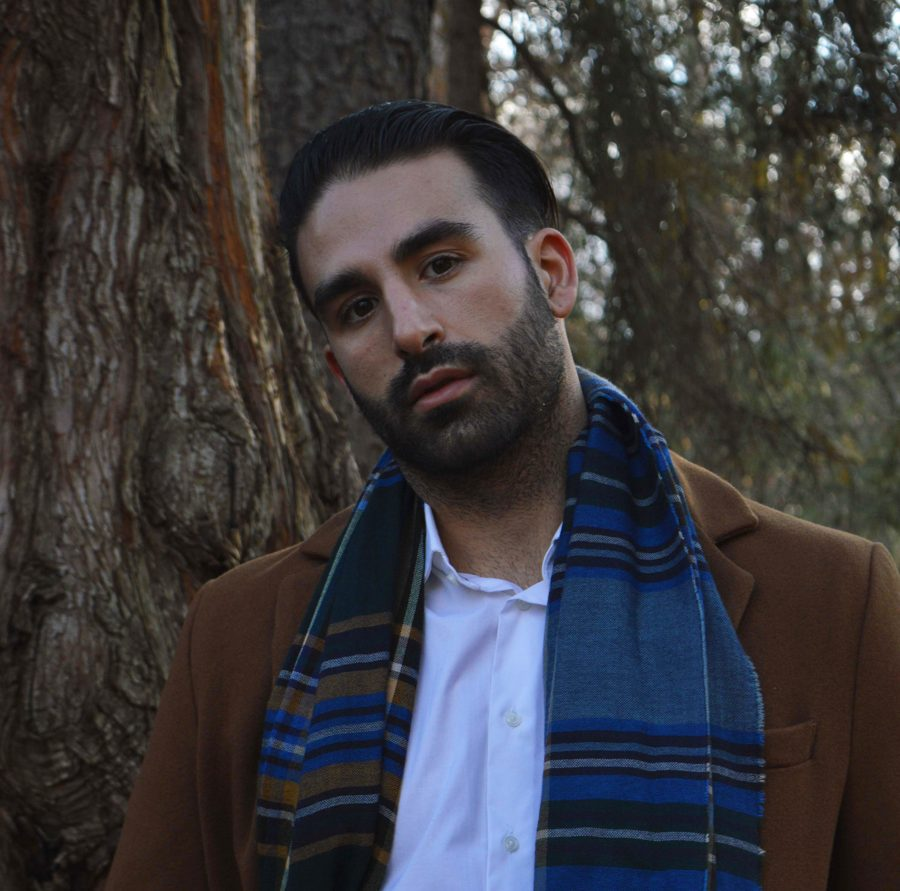
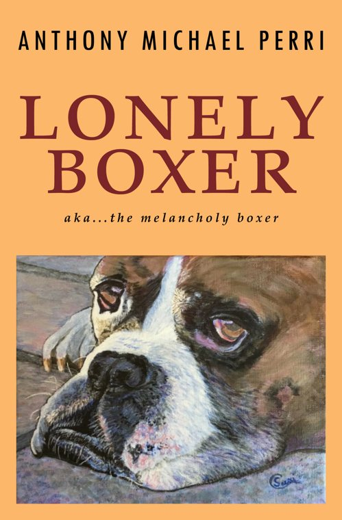
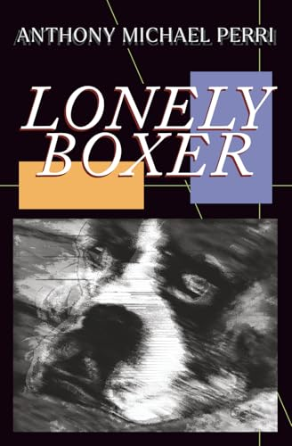
Lonely Boxer
Out of jail and back in the ring, Lonely Boxer prepares for a title fight against the world’s most popular boxer. The ring he understands. If only the rest of his life were as simple. A dark, surreal literary novella told in fragments, with bleak landscapes punched by flashes of humour.
Why leave it up to karma when I've got two fists?
“When I read it comes down to, does this sentence make me want to read the next sentence? And [his] sentences made me want to keep reading.”
“…Mr. Perri’s writings are a demonstration of what a real personal literary style can be.”
I wrote, edited, designed and typeset the book myself, and managed the first print run in Colombia.
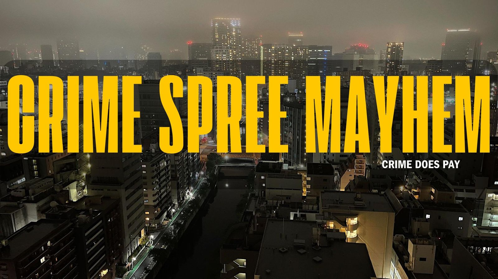
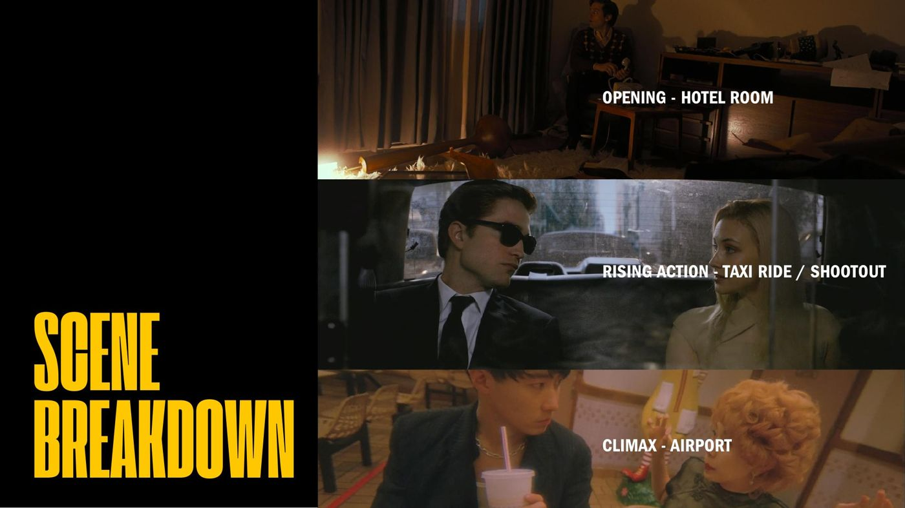
Crime Spree Mayhem
In a world where criminals can pay a weekly fee to stay out of jail, the more crimes you commit, the higher your fee. Bobby Constance, "criminal rockstar," has to keep pulling bigger jobs just to stay free.
Adapted from my own novel manuscript. I wrote the screenplay, drew the storyboards, and built the pitch deck, budget, shooting schedule and stunt breakdowns. I also wrote grant applications to the Canada Council for the Arts and the Ontario Arts Council.
Scripted, shot, voiced and edited by me
Educational video for my YouTube channel. I handle the full process: research, scripting, filming, voice-over, original music, editing in Premiere Pro and After Effects, and thumbnails.

J.P. Müller's Rubbing Exercises
A 1904 fitness classic, explained and demonstrated

Hindu Squat: Old-School Conditioning
Short-form instruction

3 Tips to Improve Your Balance
Teaching on camera
Learning that builds over time
I've taught for more than ten years: critical reasoning at Toronto Metropolitan University, English in Toronto and Málaga, and yoga and wellness with the City of Vaughan and in Spain and Colombia. All ages, all levels, all abilities. I design around progression rather than one-off activities. I find out where people are starting from, sequence the material, watch how they respond, and adjust as I go.
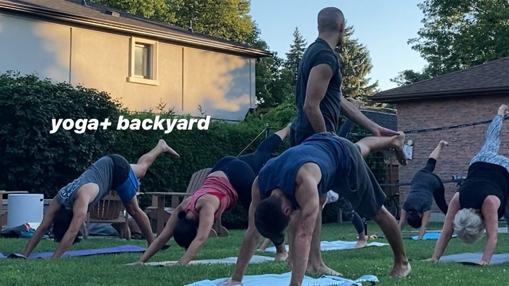
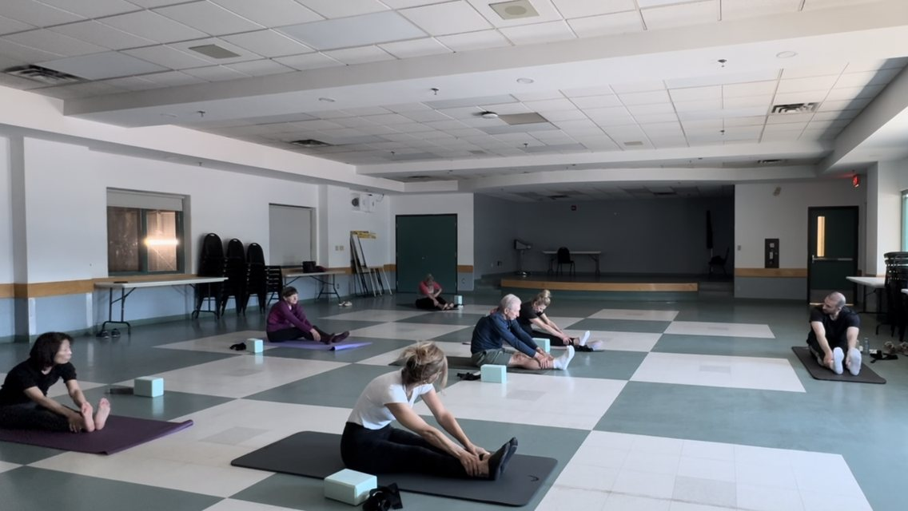
Recreation & wellness programs
City of Vaughan, Recreation Services
Plan and deliver yoga and wellness classes for community participants of all ages and abilities, adapting each session to the people in the room.
Teaching Assistant, Critical Reasoning
Ryerson University (now Toronto Metropolitan University)
Led two tutorial groups of 25 students each term, graded exams and assignments, helped set grading standards and held office hours.
English teacher
Hansa English Academy, Toronto · Babel, Málaga
Taught students of every age and level, from everyday conversation to exam preparation, and made my own lesson materials and vocabulary games.
Founder & instructor, yogaphysique
Studios, outdoors and online · yogaphysique.github.io
Group and private classes in Toronto, Spain and Colombia, plus instructional videos I script, film and edit for YouTube.
“His classes are well-organized, inclusive, and thoughtfully sequenced. Participant feedback has been consistently positive, often noting Anthony’s calming presence, clear instruction, and ability to adapt to various needs within a class.”
Liana Kearney, Fitness Coordinator, City of Vaughan Recreation Services
“I was told, ‘This is as good as it gets.’ In January, I tried Yoga for seniors classes with Anthony. By June, I could bend my knee better. I no longer have knee pain or swelling.”
Mary Saxler, student
“He always offers modifications, listens carefully, and creates a supportive, safe environment. I feel stronger, more flexible, and more hopeful because of his teaching.”
Sylvia Cigna, student
How the work gets made
I make everything I make from beginning to end. These pages walk through what goes into each one.
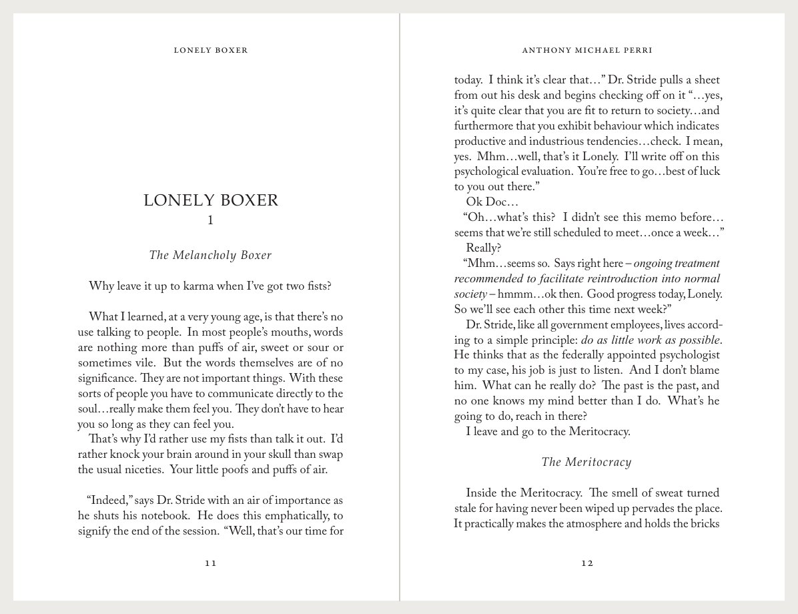
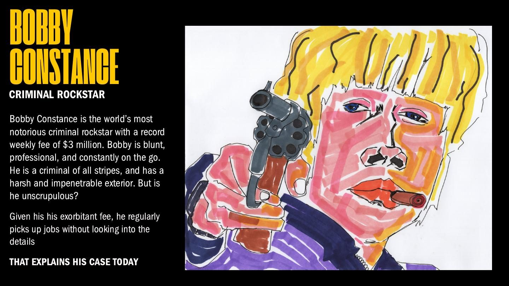
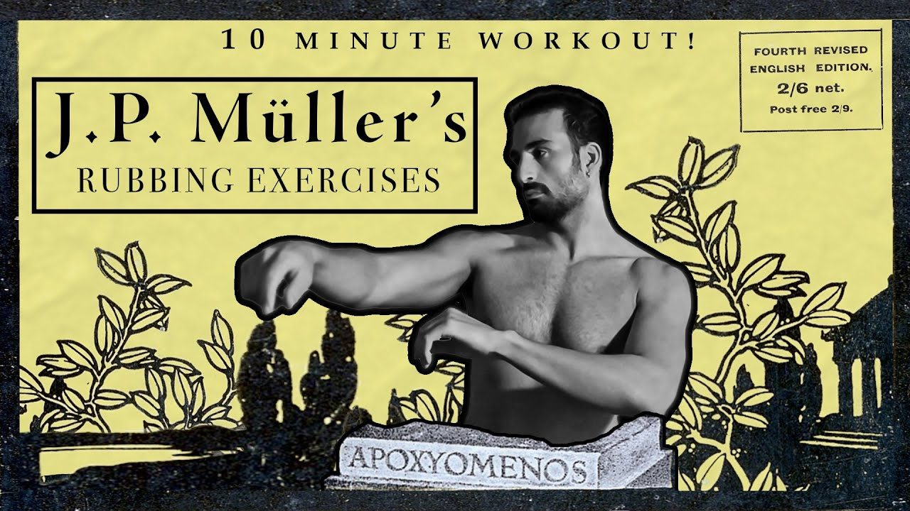
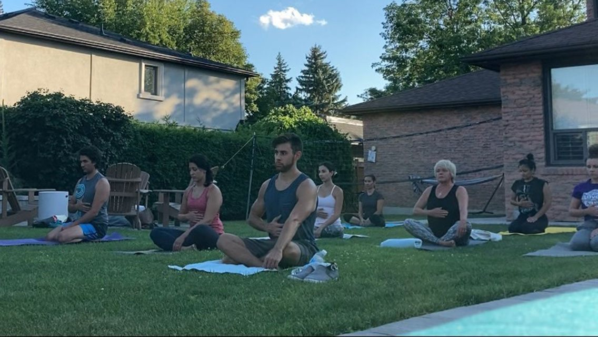
Heaven for Lovers / El Cielo para los Amantes
I lived and worked in Spain and Colombia for years, and I write and translate in both languages. This is a story I wrote in English and translated into Spanish myself in Cádiz, keeping the voice, rhythm and heat of the original rather than just the meaning.
This must be it. Heaven for lovers. The streets of Cádiz. It's impossible, isn't it? Not to fall in love here. Especially when the Levante hits, and everyone goes crazy. The wind slams the windows and the doors in the apartment shut. It's boiling hot outside. There's sweat constantly beading on the brow. At night, the wind gives you nightmares. Why did I recite her that poem?
In 1947 the storage depot in the new city, which housed countless bombs, mines, and missiles, exploded. The blast killed around 150 people and destroyed much of the new city. The cause is still unknown. Foul play is suspected. For whatever reason this reminds me of her.
Esto tiene que ser. El cielo para los amantes. Las calles de Cádiz. Es imposible, ¿no? No enamorarse aquí. Sobre todo cuando el Levante viene, y todo el mundo se vuelve loco. El viento cierra las ventanas y las puertas en el apartamento. Fuera hace un calor achicharrante. El sudor está siempre cayendo por la frente. Por la noche, el viento te da pesadillas. ¿Por qué le recité ese poema?
En el año 1947, el almacén en Puerta Tierra, donde guardaron incontables bombas, minas y misiles, explotó. La explosión mató a casi 150 personas y destrozó gran parte de la ciudad. La causa es todavía desconocida. Se sospecha juego sucio. Esto me recuerda a ella.
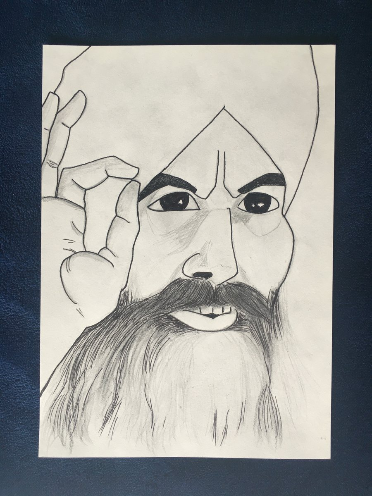
I also write original Spanish, including La Mente Neutral, an essay written in Colombia for a yoga studio publication. I drew its cover art too. I'm comfortable in both European and Latin American Spanish.
Ten stories, one collection
Ten stories I wrote before my first self-published novel, from dark fables to stories of romance set in Andalusia. I also write philosophical essays on phenomenology, perception and love, including “The Nature of Standing”, and have a third novel in progress, A Modern Romance.
- 01The Bat
- 02The Return of Prince Nazir
- 03The Casanova of Córdoba
- 04Admitted
- 05Does True Love Exist?
- 06Government Man
- 07The Mistrustful Man of Málaga
- 08The Colombia Report
- 09Heaven for Lovers
- 10The Eugenicist
…And down he descended many depths, deep in the hollow of the earth, a gaping dark cavernous ruin, he descended. And as the light faded the tunnel narrowed, until at last he was forced to find his way with touch and foot alone.
“Why have you come to my Moonlit Chamber, what is it that you desire?”
“I seek to follow the way of the Bat. I seek your knowledge.”
From “The Bat”
From idea to finished work
I studied philosophy at York University (BA, magna cum laude) and did graduate work at Toronto Metropolitan University. I've lived and worked in Toronto, Spain and Colombia. In Medellín I organized poetry readings, book launches and art shows at the bookshop La Pequeña Gran Librería. At Rhozeland Design Studio I managed projects and led the writing, including the proposal that won the studio a grant. What ties it together is taking something complex and making it land with an audience.
I also draw and paint. See my art →
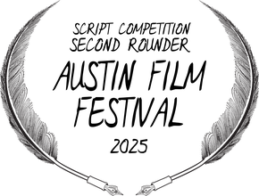
Looking for a writer who can also make the thing?
Open to roles and projects in development, script and story, creative production, copywriting, and Spanish adaptation and localization.